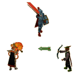
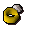
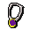
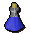
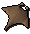
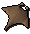

Combat Triangle and Tactics
Introduction
 There comes a time in a young adventurer's life when they must leave the nest, stretch their limbs and fend for themselves. It's a time to abandon all quests, to wave sadly to the hellcat and make the lonesome trek north to the Wilderness's Clan Wars, the west to Castle Wars and the TzHaar Fight Pit, or south to Al Kharid's Duel Arena; the especially bold may choose to attempt the exceedingly dangerous PvP and Bounty worlds. It is there that other RuneScapers will be waiting expectantly with a hefty mace and a bloodthirsty smile, ready to introduce fledgling adventurers to the complex world of player killing, or, in more friendly terms, pk-ing.
It is wise, therefore, to glance over a few tips and strategies before scampering to the distant reaches with a tinderbox, a packed lunch and the hope of making a few more friends.
Idly wandering around these places will identify fellow players as three, often overlapping, stereotypes: melee fighters, rangers and mages, all of which form the corners of the combat triangle. Each corner has a distinct advantage over one other, but is heavily disadvantaged against the other.
Melee Fighters
![[image]](../../img/main/kbase/misc/generic_fighter.gif) Advantages - For those who want to get up close and homicidal, melee is the preferred option. This involves, generally, bulkier weapons and armour than the light and flimsy range and mage options. Not only does this make you look more impressive, it gives the adventurer a strong advantage over Ranged attacks. Arrows and bolts will have a hard time piercing armour, allowing the melee fighter to get close enough to do serious damage.
Advantages - For those who want to get up close and homicidal, melee is the preferred option. This involves, generally, bulkier weapons and armour than the light and flimsy range and mage options. Not only does this make you look more impressive, it gives the adventurer a strong advantage over Ranged attacks. Arrows and bolts will have a hard time piercing armour, allowing the melee fighter to get close enough to do serious damage.
Disadvantages- The 'but' comes when encountering mages. Well-constructed melee armour does a good job of deflecting blades and bolts, but also manages to strongly conduct Magic attacks, increasing the effects and damage caused by an opportunist magician. An experienced spellcaster can also paralyse a melee combatant with a 'holding' spell and then attack from afar. Mages are melee fighters' arch enemies, and so should be avoided.
Mages
![[image]](../../img/main/kbase/misc/generic_mage.gif) Advantages - The mage may look like an easy target, wearing what could be described as a glorified flannel, but beneath their soft and stabbable exterior lies a dangerous opponent. A combination of 'holding' spells and Magic's conductivity through armour makes the mage strongly anti-melee, often keeping a hand-to-hand combatant incapacitated and highly vulnerable.
Advantages - The mage may look like an easy target, wearing what could be described as a glorified flannel, but beneath their soft and stabbable exterior lies a dangerous opponent. A combination of 'holding' spells and Magic's conductivity through armour makes the mage strongly anti-melee, often keeping a hand-to-hand combatant incapacitated and highly vulnerable.
Disadvantages - Soft-to-the-touch cloaks and robes make the mage a tempting target for passing rangers. With little Ranged Defence, this often makes the mage a walking pin-cushion - and 'holding' spells will only encourage rangers to shoot from afar.
Rangers
![[image]](../../img/main/kbase/misc/generic_ranger.gif) Advantages - With light, articulated armour for optimum ranging, the ranger is able to substitute what his or her armour lacks in physical Defence with magical resistance. This makes the ranger a strong adversary for the mage, who will find a foe that is well defended against magical attacks while also being able to attack from long distances.
Advantages - With light, articulated armour for optimum ranging, the ranger is able to substitute what his or her armour lacks in physical Defence with magical resistance. This makes the ranger a strong adversary for the mage, who will find a foe that is well defended against magical attacks while also being able to attack from long distances.
Disadvantages - To keep nimble, the ranger has sacrificed a large element of his or her armour's melee Defence. A hand-to-hand combatant will be able to aim attacks at the joints and other unprotected areas with relative ease, as long as they can get close enough to do so.
Variables
The combat triangle is at the centre of player killing, and indeed combat throughout RuneScape, but this is not to say that its simple balance is always present and correct. As you would expect, many variables affect these fundamentals and tip the balance in favour of you or your opponent.
Armour
![[image]](../../img/main/kbase/armour/melee/rune_plate.gif)
Weapons
![[image]](../../img/main/kbase/weapons/melee/bone_spear.gif)
![[image]](../../img/main/kbase/weapons/melee/abyssalwhip2.gif) Player killers will often take two weapons to maximise the damage to an opponent's (i.e. your) life points. Melee fighters in particular will take a strong weapon and a poisoned weapon, so as to drain life points while inflicting melee damage.
Player killers will often take two weapons to maximise the damage to an opponent's (i.e. your) life points. Melee fighters in particular will take a strong weapon and a poisoned weapon, so as to drain life points while inflicting melee damage.
Jewellery
  Amulets, rings and other forms of jewellery often give small bonuses to Attack and Defence stats. These are generally minor, though some can have special properties: the ring of recoil's ability to deal damage back to the opponent, for example.
Statistics
Potions

![[image]](../../img/main/kbase/items/potions/other_potions/superstrength_potion.gif) Once taken, a potion will not affect a player's combat level, but can boost offensive and defensive capabilities, amongst other status changes.
Once taken, a potion will not affect a player's combat level, but can boost offensive and defensive capabilities, amongst other status changes.
If you are a non-member, you can still obtain normal Strength potions, which will help you gain the upper hand in a fight.
Prayers
![[image]](../../img/main/kbase/skills/prayer/swizzle_sticks/prayer22.gif)
Foods
![[image]](../../img/main/kbase/items/food/fish/shark1a.gif) 
It is best to head to PVP activities with something more than a few cooked shrimp. Provisions will restore valuable in-battle life points and help bring you back up to strength afterwards. It is advised to stock up with those food items that restore a large number of life points in one sitting - the larger fishes like sharks or manta rays, for example.

It is best to head to PVP activities with something more than a few cooked shrimp. Provisions will restore valuable in-battle life points and help bring you back up to strength afterwards. It is advised to stock up with those food items that restore a large number of life points in one sitting - the larger fishes like sharks or manta rays, for example.
None of you knew Ichabod like he wanted you to, and he won't be liking how you remember him, neither. He always felt like he had a big old keg of greatness in him, that boy, and nothing we could do would shake it out of him. Boy got the notion that he was born to kill, running round town with a pot on his head and stabbing rats. Tried to get him into farming like his Pappy, of course, but the boy never learned. Then he got into visitin' the edge of the Wilderness. Cursed if I would let a Russ start into killing, so I started taking away his allowance. He'd mumble some nonsense about the combat triangle, that he'd beat it, and the rest you all know. Walked into Varrock market square. Said he would prove his theory, and pulled on a mage outfit he'd made out of sacks. Wild-eyed look on his face, the boy sprinted into the Wilderness. Went as fast as I could after the boy, but I couldn't get in to grab him. Boy didn't last the morning. So now you're here in the ground, Ichabod, you fool. Maybe that'll learn you. Pappy Russ, eulogy for Ichabod Russ's funeral |

More articles in
Combat
|
|
|
Further Help
Need more help? Come chat with us!
|
|